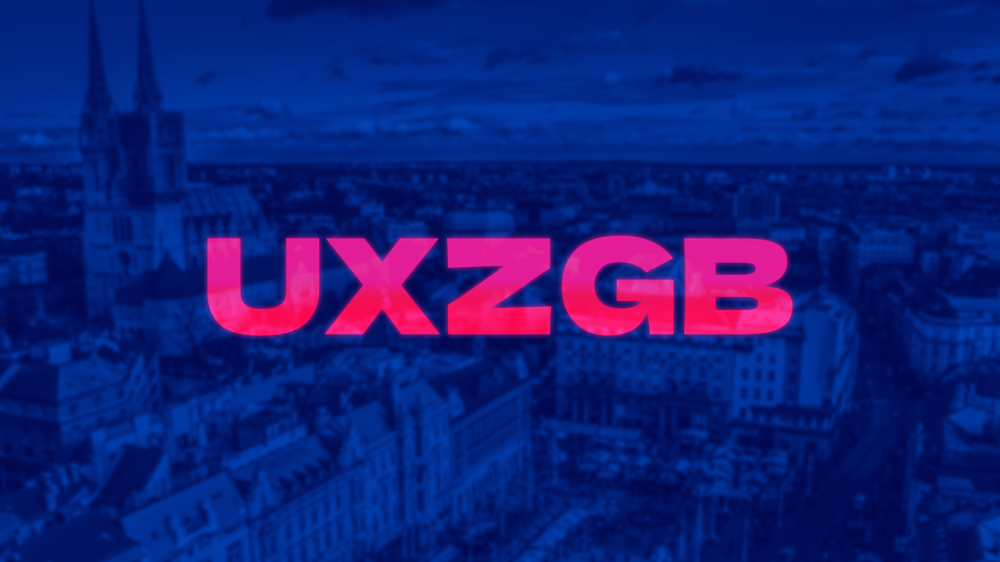
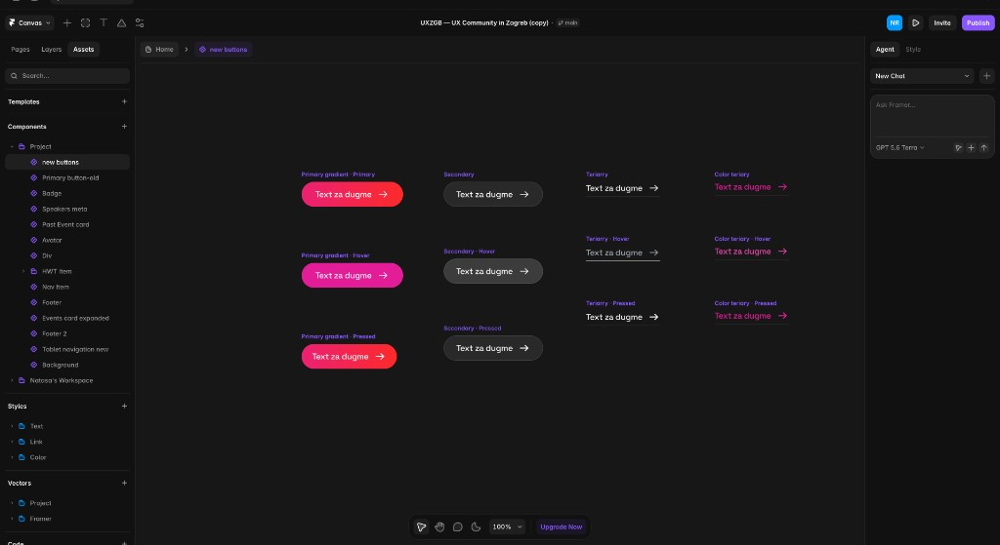
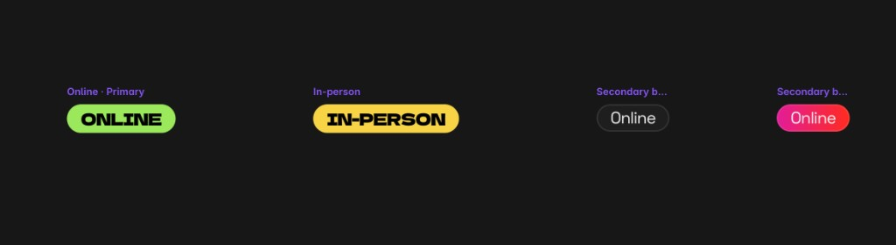
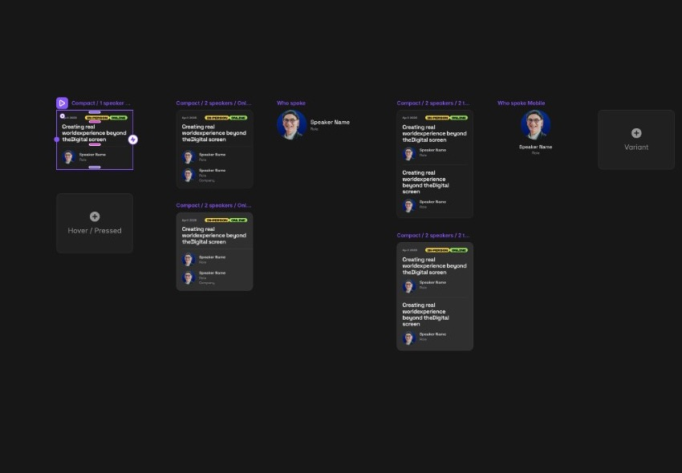
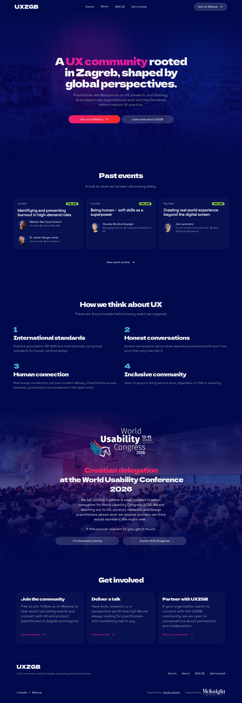
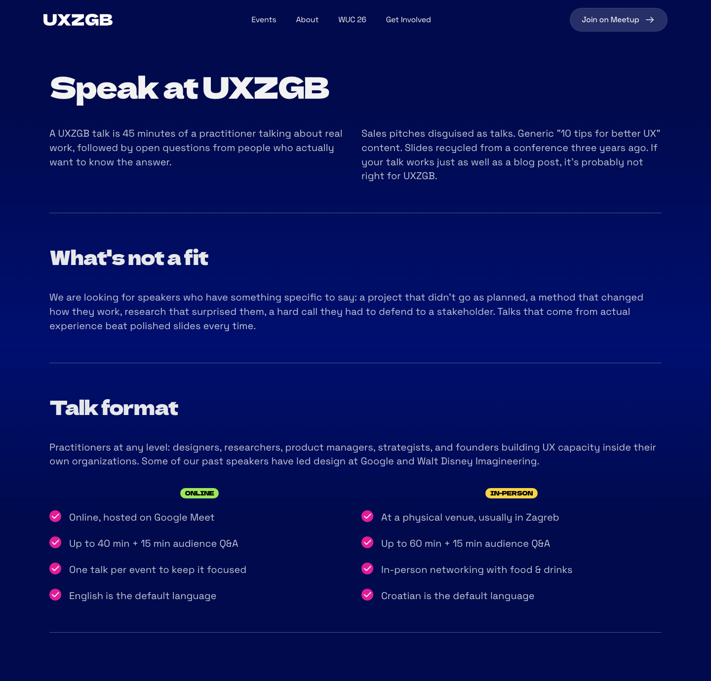
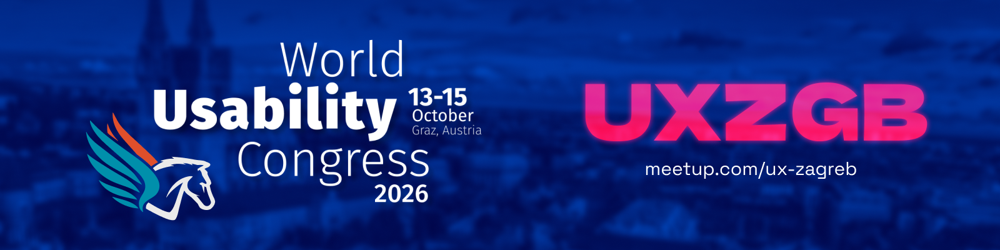
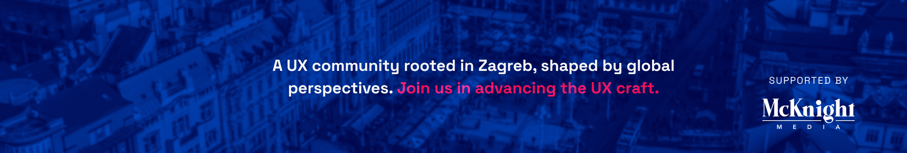
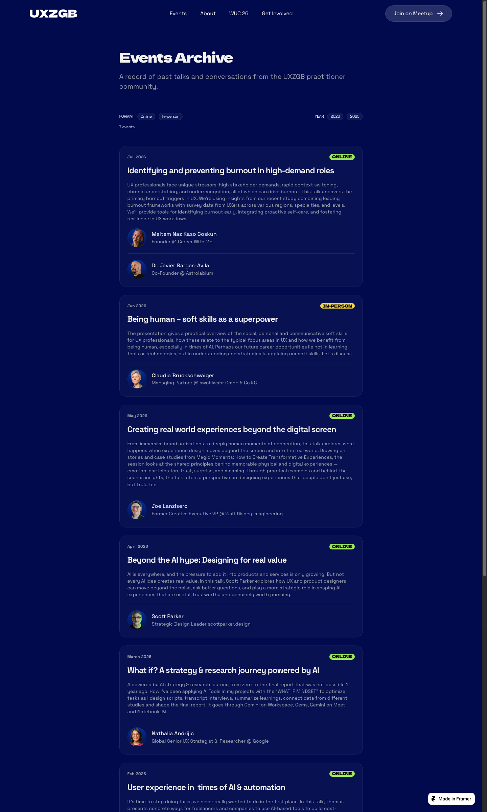

New brand and community site — atomic system in Figma, designed and published in Framer.
UXZGB is a practitioner-led UX community in Zagreb. The project was a greenfield design: build the visual identity and UI in Figma with atomic design, then design and ship the live site in Framer.

The brief
UXZGB needed a proper home for a serious practitioner community — not a one-off landing page, but a scalable site for events, community principles, WUC delegation, and clear paths to join or propose a talk.
The work started from scratch: new visual language, atomic components in Figma, page templates, then the same system carried into Framer and published live.
Atomic design system
The UI was structured in Figma before any Framer work — tokens, components, and templates so the community can add events and content without breaking consistency. The same atoms were built out as a component library in Framer.




- Atoms — typography, colour, buttons, badges, tags.
- Molecules — speaker blocks, event cards, partnership rows.
- Organisms & templates — navigation, event lists, principle blocks, full pages.
Page system
Each template answers one job for the community — show activity, set standards, filter speakers, explain who runs it. Same components, different narrative depth.
Homepage
Event-first entry point — proof the community is active, principles up front, WUC delegation and get-involved paths without burying the lead.

Speak at UXZGB
A recruitment page with a filter — what belongs on stage, what doesn’t, format rules, then proof from practitioners who’ve already spoken. Low friction to propose, high bar for quality.


Speaker molecule — two views: live speaker row on the page, and the full component set in Figma.

About UXZGB
Credibility without corporate fluff — the gap between textbook UX and organizational reality, who organizes it, and ground rules that keep the room useful.

WUC delegation & brand
Dedicated journey for World Usability Congress 2026, plus identity applied beyond the site.


Framer — designed & published
The Figma system was rebuilt in Framer — same hierarchy and components, then published as a live, editable site. Event content, Meetup links, and partnership CTAs stay manageable in Framer without one-off layouts.

Outcomes
A new community brand and live site — system in Figma, designed and shipped in Framer, ready for events and partnerships to grow.
Greenfield brand and UI — not a refresh of an existing site.
Atomic Figma library before pages — consistent, scalable components.
Designed, built, and published — editable for the community team.